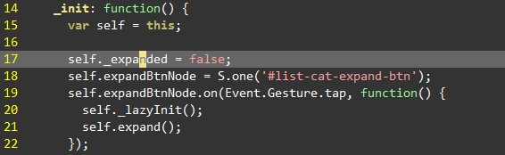
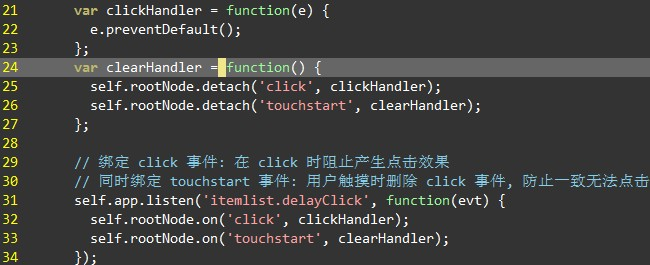

list mobile
总结
- 林谦 @ 2014/1/10
目录
- 多终端适配方式
- 遇到的问题
- 更好的方案?
多终端适配方式
- listing 整体设计方案
- 后端判断 UA 加载对应 assets
- url 对外一致
分辨率适配
适应各种分辨率, 横屏&竖屏
- 宽度设定: 像素 or 100%? flexbox
- 宽度问题: border box-sizing
- 兼容问题: caniuse
- 等高等宽元素: padding&margin 百分比
- 布局: overflow:hidden 配合 iscroll, 更像 native
手机上缓存
- 手机上缓存严重, 预发上经常更新不到
- 动态载入 assets: kissy tag
- 静态引入 ?ks-debug 开发添加时间戳
性能 - dom
- 减少 dom 查询
- id selector
- 代理 Node.one() 实现缓存

性能 - 动画
- css transition
- keyframe
- 支持程度？
性能 - js
- 延迟初始化
- _init() -> _lazyInit()
- 
遇到问题 - 点击事件
- 300ms 延迟
- 移动端上双击事件
- KISSY.Event.Guesture
- 平台统一
遇到问题 - 点击穿透
- 现象: 点击浮层上元素时, 将浮层关闭, 浮层下面元素触发 click. 绑定的是 Event.Guesture.tap 事件。
- 原因: 移动设备上 300ms 延迟
- 解决: 阻止下面 click 事件 ?
- 
遇到问题 - iscroll 性能
- iscroll: js 移动元素实现滚动
- 好处: 解决原生滚动阻止 js 执行问题
- 问题: 劣质手机,卡！
- 解决: android 4.0 下原生滚动
遇到问题 - 兼容性
- webview & browser 兼容性问题
- iphone 3gs select 将页面挤出去 scrollTop(0)
- ucweb 浏览器左右滑动页面 前进/后退 => prevent touchmove
更好的方案
- KISSY 动态加载, autocombine
- 好处: 选择性加载&调试